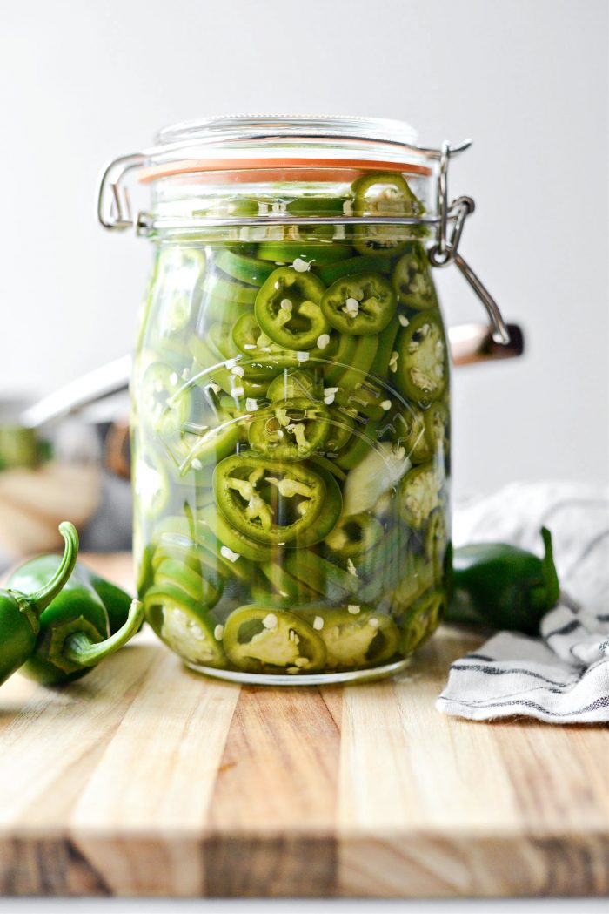

Pickled Jalapenos

Easy Homemade Pickled Jalapenos
No refrigerator is complete without a deliciously crunchy jar of pickled jalapenos. This is the easiest way to add some brightness and a little kick to your home cooking life. These pickled jalapenos are ready in under an hour, but BEWARE these take a day or two to mellow in the fridge, so they will be spicy right after being made! Yields 1 liter jar.
Prep Time: 10 mins | Cook Time: 30 mins | Total Time: 45 mins
Ingredients
- 20 jalapeños, sliced, stems discarded
- 2 cloves garlic, smashed and peeled
- 1.25 cup distilled white vinegar
- 1.25 cup filtered water
- 1.25 cup sugar, optional as this is for flavoring
- 2 tablespoons kosher salt
Steps
- In a medium sauce pan combine sugar, salt, garlic, water and vinegar.
- Heat to a boil, stirring to dissolve the sugar and salt. Once at a boil; add the sliced jalapenos pressing them so they are submerged under the pickling liquids. Remove the pot off of the heat and let them sit for 10-15 minutes.
- Use tongs to transfer the jalapenos into a clean jar. Ladle the pickling juices over top until you've reached the top of the jar. Let cool at room temperature before securing a lid and popping them into the fridge.